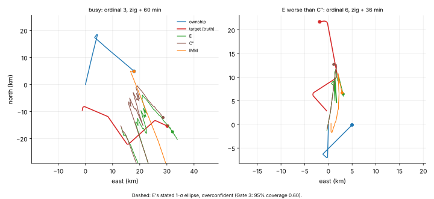
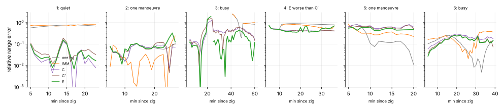
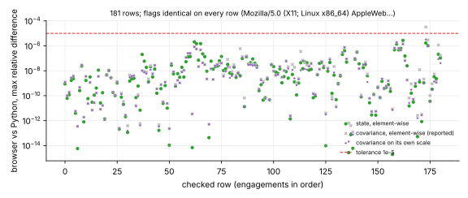
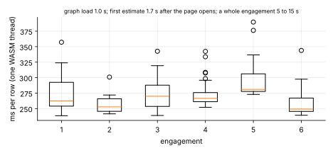

The exported graph in ONNX Runtime Web, checked row by row against Python
15 November 2026 · spec 020 · gitma2
What runs where
C and its confirmation are host code; only E-w's graph gives a number the page can show.
Six engagements, chosen by rule
Gate 2's used test seed 319; no fresh seed.
Quiet, one manoeuvre, busy, and the first where E loses to C″; then one more of each.
Every 60 s from zig + 5 min: 181 rows in all; 1.2 MB with the graph.
At the 24 G5 rows, the demo's E matches Gate 2's committed predictions to 2 × 10⁻⁷ in range.
Two of them as tracks

E's dashed ellipse is its stated 1-σ: overconfident (Gate 3, 95% coverage 0.60). The page shows it only with that warning.
Range error, every engagement

E tracks C and C″ closely, ahead on some engagements and behind on others. On engagement 5 the one-leg fit is better late on. A demonstration, not a result: Gate 2's record is.
The browser computes what Python computed

State within 2.7 × 10⁻⁶, covariance on its own scale within 3.2 × 10⁻⁶, flags identical. One off-diagonal covariance element of one row is 3.2 × 10⁻⁵ element-wise: reported, cause not established.
Fast enough on one thread

About 0.27 s a row; the current time is computed first, the trail fills in behind.
Not achieved, and next
C and its confirmation do not run in the browser: a port by hand from the algorithm note would be needed for live data.
The element-wise covariance check fails on one element of one row; the gate uses a scale-aware measure (spec 020 research R6).
No calibrated uncertainty to show: Gates 3 and 4 stopped.
The SRD's default plan is now complete; what follows is the owner's choice.